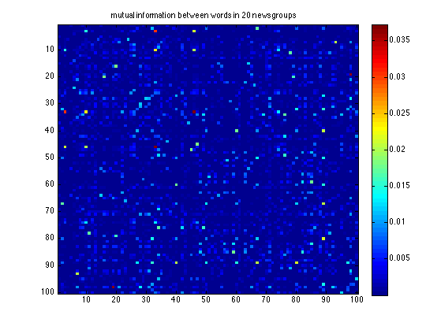
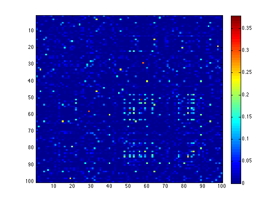
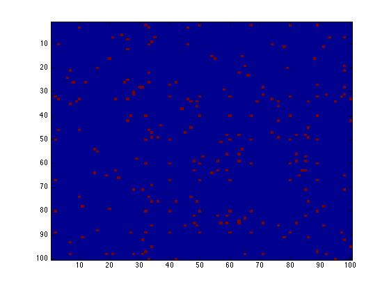
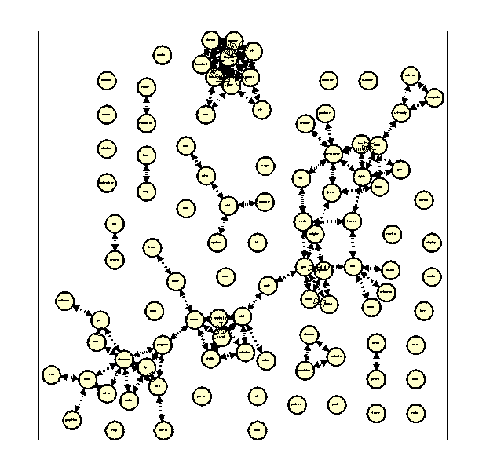

Make a 'relevance network' from the small 20-newsgroup data
(See also chowliuTreeDemo)
% This file is from pmtk3.googlecode.com loadData('20news_w100'); % documents, wordlist, newsgroups %X is 16,642 documents by 100 words (sparse logical matrix) X = documents'; [mi, nmi] = mutualInfoAllPairsDiscrete(X); mi = setdiag(mi, 0); nmi = setdiag(nmi, 0); figure; imagesc(mi); colorbar; title('mutual information between words in 20 newsgroups') %printPmtkFigure('relevanceNetworkNewsMI') figure; imagesc(nmi); colorbar m = max(mi(:)); G = (mi >= 0.2*m); sum(G(:)) figure; imagesc(G) if ~isOctave() drawNetwork('-adjMat', G, '-nodeLabels', wordlist); printPmtkFigure('relevanceNetworkNewsgroup20pc') end
ans = 224   